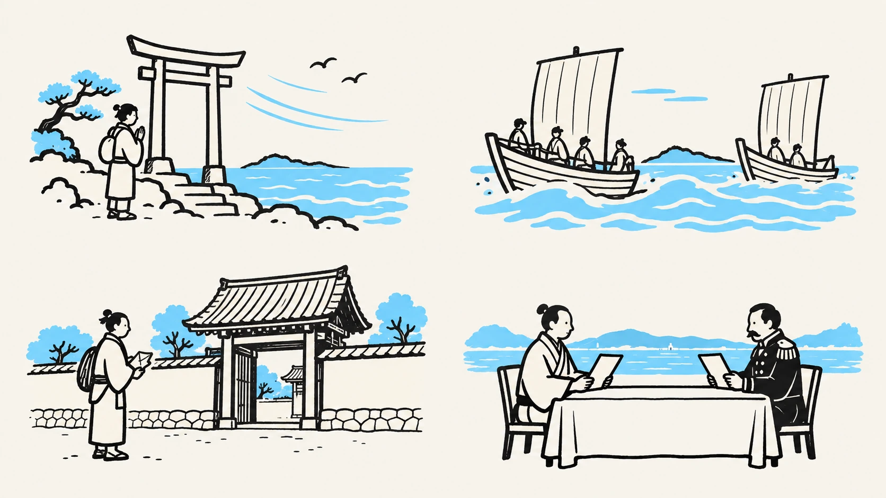
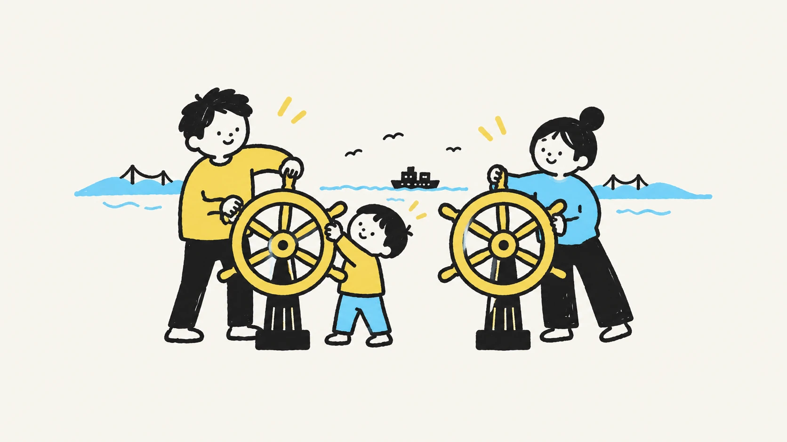
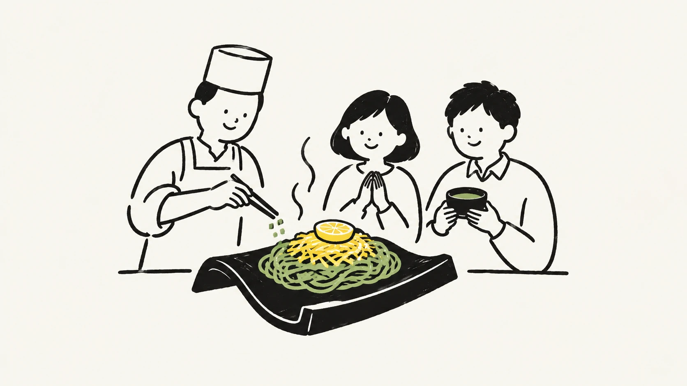
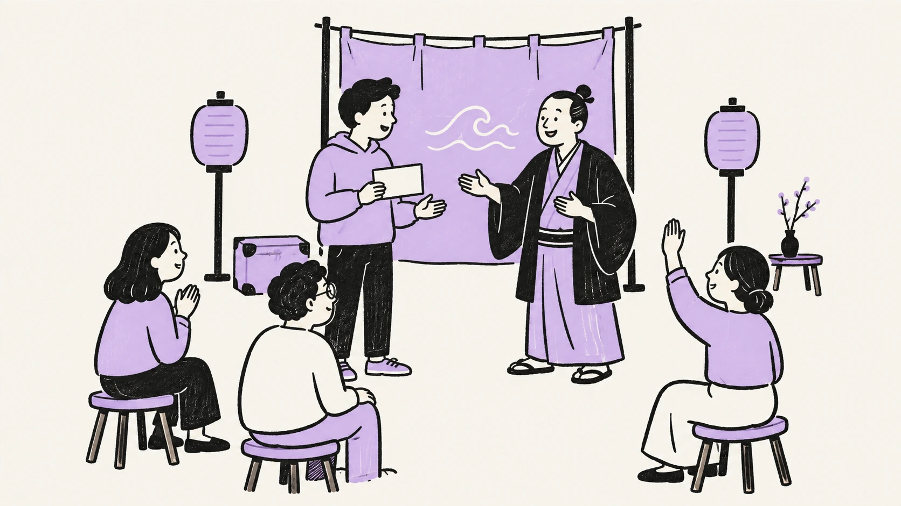
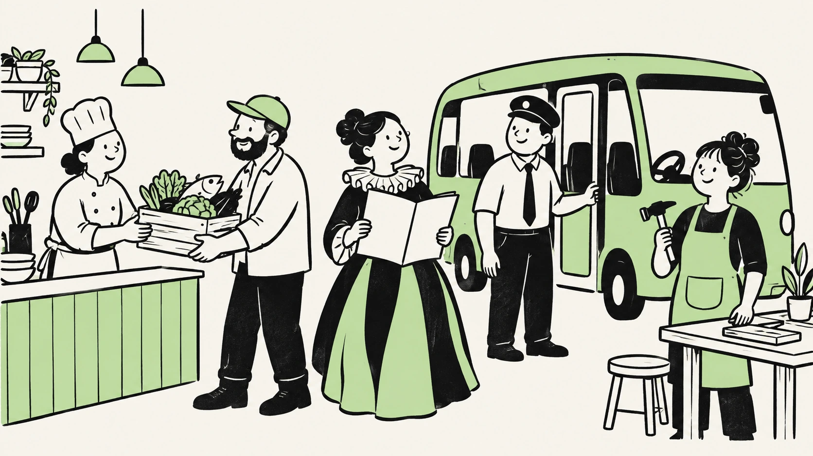

一 / 神話・伝承仲哀天皇・神功皇后、
仲哀天皇・神功皇后、
住吉神の物語。
海を渡る人は、何を願った？
昼に訪ねる：住吉神社・忌宮神社
夜は、どんな物語に？
船出の手紙を受け取り、風と潮を手がかりに行き先を選ぶ創作体験。
社寺に伝わる由緒・伝承を題材にし、実証された歴史と区別します。
大丸下関店の営業終了後を見据えた、
関門広域の滞在拠点の提案。
ここから先は、これからつくりたい未来の話です。 大丸・シーモール・自治体等の公式計画ではありません。出店・改修・連携・運行・開業は未決定です。
歴史の舞台を歩いたら、夜はその物語の登場人物へ。
４つの物語から、その日の一章を選びます。
遊ぶ。食べる。物語に入る。
下関に泊まりたくなる、３つの遊び場。

仲間と舵を回し、潮を読む。
みんなで港を目指す航海ゲーム。
関門海峡そのものが、遊びになる。
役割や難度を変えて、次の航海へ。可動式の舵と床の航路図から小さく試し、映像設備は反応を見て判断します。

袋せりの合図を、まねしてみる。
料理人と瓦そばを仕上げる。
港の仕事も、食事の楽しみに。
南風泊の袋せり、川棚生まれの瓦そば、ふくの食文化。旬の魚と料理人が変わる予約制の食事会を、地元の厨房・仕入先と組んで試す案です。

俳優に話しかけ、自分で選ぶ。
その返事で、次の場面が始まる。
昼に歩いた歴史が、夜の舞台に。
４つの物語を、ひと晩に一章ずつ。選択で変わるのは架空の旅人の結末です。館内の一室で短編から始め、地元の演者・語り手に制作と上演を発注する案です。
過ごし方の案です。一つの章・一つの体験から選び、宿への帰路を予約前に確認します。
史実・伝承・創作を分けて制作。 手紙と登場人物は創作案です。文化監修を経て扱い、史実の勝敗や条約の内容を参加者が変える企画にはしません。神社での夜間開催、既存作品・施設との連携は未合意です。
最初に試すのは、週末の小さな食事会と公演。 大型設備を先に揃えず、実際に料金を払って参加する人がいるかを確かめます。
予約で決めること：体験時間、料金、言語、年齢の目安、食物アレルギー、取消条件、宿への帰路。ノンアルコールでも楽しめる内容にします。
運営で決めること：厨房、防音、避難、定員、夜の人員・帰宅手段、警備、権利・文化監修。ふくは専門の調理者が扱い、競りの模擬体験では結果によって料金や提供する食事を変えない設計です。
続ける判断：有料予約、参加者の評価、次回来訪、地元への発注、直接運営収支を確認。集客や採算が弱ければ内容を変え、改善しても成立しなければ常設化を見送ります。
夜の体験が宿泊増に結びつくかは未検証です。もともとの宿泊予定と体験後の行動を分けて確かめます。運営者・費用負担・停止基準は、発注前に責任者が決めます。
建物の中から、海峡の向こうまで。
３つのマップで見る、
「もう一泊したくなる街」のつくり方。

地元の買い物、夜の食事、観光案内。入口に利用頻度の高い機能を集める。
3F案はIP・参加型劇場、4F案は海峡の航海ゲームなど。夜の体験も、立体的につなぐ。
駐車場、買い物、近くの映画館。既存機能と役割を分け、歩く接続を整える。
全館同時の開業を前提にせず、需要のある区画から。夜間利用区画と日常利用区画の入口・運営も、建物調査に基づき設計します。
次は、建物の外へ。下関市内の周回を見る
新下関駅も関門観光の入口に。長府へはバス、下関駅へはJRで接続する。
海響館、唐戸市場、赤間神宮から、長府の武家屋敷や土塀の町並みまで。
荷物を受け取り、予約した食と文化へ。宿への帰路もまとめて案内する構想。
既存バスの接続はサンデン交通の観光アクセス案内を参照。すべてが同じ系統ではありません。時刻・行き先・乗り換えを確認してください。
さらに、海峡の向こうへ。関門全体を見る
小倉JR →門司港船 →唐戸バス →下関駅前JR →小倉
小倉〜門司港は門司駅経由。ダイヤ・乗り換えを確認して組み合わせます。唐戸から門司港へ。市場、港の街歩き、海峡の風景をつなぐ。
下関と北九州を鉄道でつなぐ。新幹線での到着から広域の回遊まで案内する。
下関・門司港・小倉の宿泊施設との連携案。予約前に、夜の帰り方まで確かめる。
既存交通が深夜まで運行することを示す図ではありません。最終便は関門汽船、JR九州等の公式案内で確認。最終便後の宿への移動は、予約制交通などを別途設計します。
周回便と、夜の帰路の企画を見る建物を出てからも、体験は続く。
「次はどこへ？」と「どう帰る？」を、
ひとつのモビリティ企画に。
５つの拠点を、ひとめぐり。
既存バス・JRを土台に、乗り換えの負担を減らす周回便を検討。停車するエリアと巡る順序の案です。
下関駅前の遊び・食事・ものがたり劇場から、宿泊エリアへ。宿の場所と人数を事前に集約し、既存交通または予約制のタクシー・乗合交通で帰路を設計。
夜の定期周回便を最初から設定せず、予約・需要に合わせる案。深夜運行・送迎の実施は未決定です。
小倉 → 門司港 → 唐戸 → 下関駅前 → 小倉。既存のJR・船・バスで巡る関門周遊と、下関市内の周回便をつなぐ。旅程、乗り場、荷物、帰路をまとめる。共通券や予約連携は交通事業者と協議する企画案。
試走で所要時間を測る → 乗降場所・乗り継ぎを確認 → 運行主体・費用負担を決める → 予約や乗車実績をもとに便数を調整する。
停留所、車両、運賃、運行時間、便数、必要な許認可・乗務体制は、交通事業者・施設・行政等と協議して決定します。段差、車いす・ベビーカー、大きな荷物への対応も実地確認が必要です。現時点で運行・予約受付は行っていません。
平日は買い物、学び、仕事。
週末は、関門を訪ねる人の入口に。
食料品、医療、美容、子どもの遊び。日常の用事をまとめて。
自習、仕事、ものづくり。地元の人が何度も使える場に。
日本ブランドと地域の品、許諾を得たIP展示。限定の体験や商品を育てる。
導入機能の候補。シーモール・近隣の映画館などと役割を分け、既存機能や需要を確認して選びます。
長府・新下関から、小倉・門司港まで。
昼の周回と夜の帰路を、一つの旅として案内する構想。
旅程、交通、夜の体験、宿泊、荷物預かり。
予約や案内をつなぐ、関門の入口へ。
構想を伝える体験例です。予約機能はありません。営業日・運航・バリアフリー対応は各公式案内で確認が必要です。

目指すのは、ここで暮らす選択肢を増やすこと。
消費・地元への発注・所得・続いた雇用を測り、人口減少への効果は長く確かめます。
地域は下関市を基本単位とし、対象期間と施設・取引範囲を固定します。北九州市分と関門全体の集計を別に表示し、同じ取引を重複加算しません。地域への一次支払額（市内事業者への仕入れ等）と、市内に帰属する付加価値（雇用所得・利益等）は別の指標にします。
LOCAL MONEY RATIOの考え方：施設利用から直接・間接に生まれ、市内に帰属する付加価値の推計 ÷ 対象消費額。域外への仕入れや所得流出、取引段階間の重複を調整する必要があります。これは確立した統一指標や実測値ではなく、算定範囲・税の扱い・方法を検証するための提案です。
地元企業・創業者には、低い固定賃料と売上歩合を組み合わせる案です。地元雇用・仕入れ・地域への再投資を評価するLOCAL IMPACT SCOREも評価設計案です。対象・配点・証憑・見直し方法を公開し、地域貢献だけで賃料を決めず、支払い能力と施設全体の採算を合わせて確認します。
すべて提案段階です。対象建物の使用権、改修、出店・運行・宿泊連携は未合意。調査・実証の結果で変更や中止も判断します。
まだ、帰りたくないね。
企画・制作：株式会社モビリティデザインラボ。公開情報をもとにした独自構想です。掲載施設・企業・自治体等の依頼、承認、協賛、出店・連携合意を示しません。
大丸下関店は2027年8月31日に営業終了予定で、2026年9月13日時点では営業中です。対象・周辺施設の名称は説明のために使用しています。紹介した体験は新たな企画案で、予約やチケット販売は行っていません。
関門には、すでに夜景や飲食など夜の楽しみがあります。この提案は、そこに下関の歴史・食・海峡を題材にした参加型体験を重ね、滞在を深めるものです。宿泊・消費・雇用への効果は未検証です。
公開・確認日：2026年9月13日。事業性・現地調査・実証：未実施。
イラストはこの構想のために生成したオリジナルです。歴史上の人物・建築・祭礼を正確に再現したものではありません。手書き書体は Yomogi を使用。書体の利用条件。
このページにはフォーム、位置情報取得、アクセス解析、Cookie・ブラウザー保存を使う機能はありません。マップとコースの選択は画面の表示切替のみで、選択内容を外部へ送信しません。配信元のGitHub Pagesはアクセス時にIPアドレス等を収集する場合があります。外部リンク先の利用条件は各サイトに従います。GitHub Pagesの案内。